Adopt
1,898Rescued1,670Adopted35Waiting for a family
By adopting a rescue animal, you will be signing up for a lifetime partnership unlike any other love you’ve known. WeAct rescue dogs are available for adoption in Korea, the USA and Canada.
 Baezzi11.4kg
Baezzi11.4kg WeepoongSmall 4.8kg
WeepoongSmall 4.8kg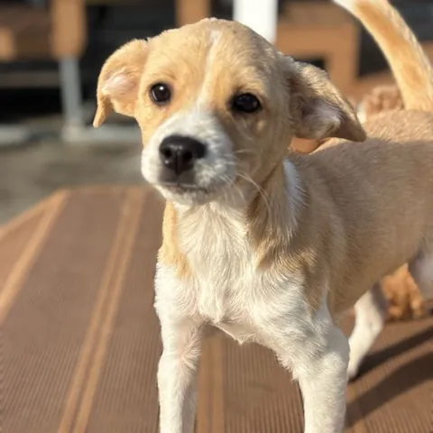
MarsSmall 4.7kg NooniMedium 10kg
NooniMedium 10kg AkoMedium 9.2kg
AkoMedium 9.2kg DangdangSmall 4.76kg
DangdangSmall 4.76kg JjangiSmall 3.1kg
JjangiSmall 3.1kg ReimMedium 10.8kg
ReimMedium 10.8kg VincieLarge 43kg
VincieLarge 43kg SomTomSmall 2.4kg
SomTomSmall 2.4kg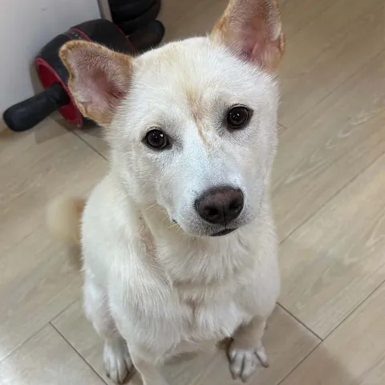
NamguLarge 19kg DuffyMedium 14.6kg
DuffyMedium 14.6kg GounSmall 7.62kg
GounSmall 7.62kg GayoungLarge 21.7kg
GayoungLarge 21.7kg SundiSmall 5.6 kg
SundiSmall 5.6 kg MauriceLarge 20.7kg
MauriceLarge 20.7kg BaramGrowing puppy 16.8kg
BaramGrowing puppy 16.8kg AnonSmall cat 4kg
AnonSmall cat 4kg BoreumMedium 17.2kg
BoreumMedium 17.2kg EddieSmall dog 6.62kg
EddieSmall dog 6.62kg JerryMedium 22.2kg
JerryMedium 22.2kg NaomiLarge 22.7kg
NaomiLarge 22.7kg VeaMedium 22.24kg
VeaMedium 22.24kg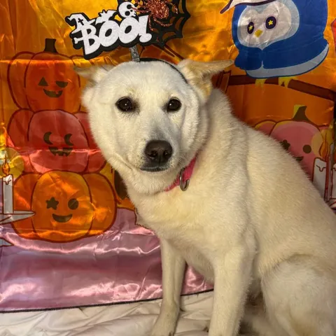
AlMedium 15.9kg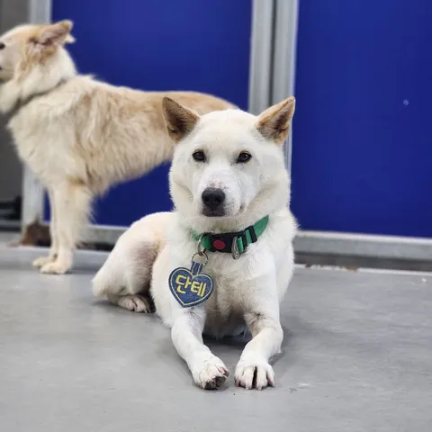
DanteMedium 17.4kg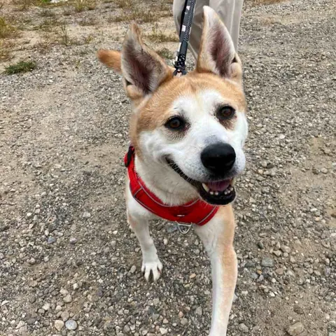
BettyMedium 17.9kg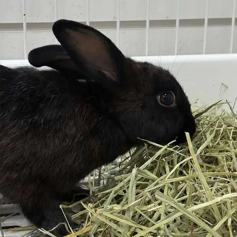
Charcoal2.2kg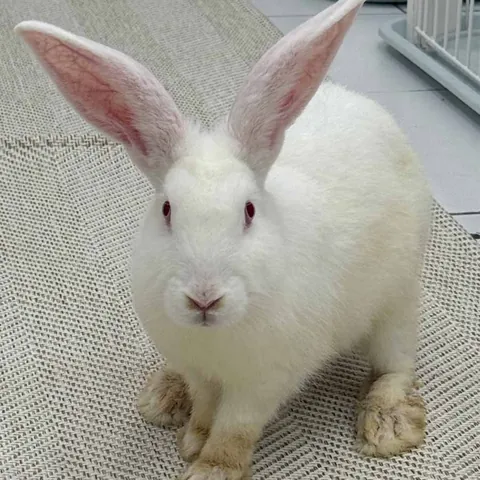
Bunny1.75kg Bugs1.9kg
Bugs1.9kg Cloud3.54kg
Cloud3.54kg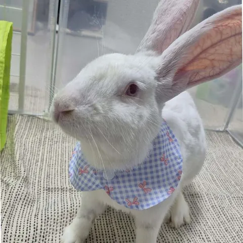
Franc3.4kg Mollang3kg
Mollang3kg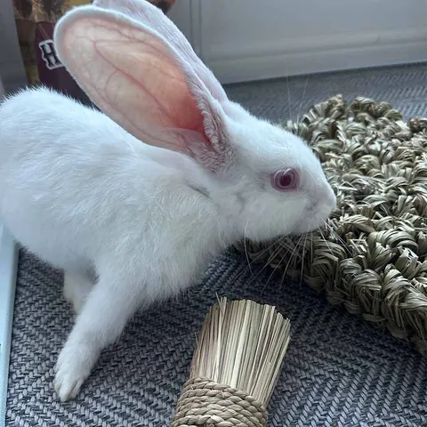
Kitty1.3kg Dokie1.67kg
Dokie1.67kg Okie1.2kg
Okie1.2kg
No one matches these filters.
Recently rescued, and we are still getting to know them. Ask us about any of them on KakaoTalk or by email: we will tell you how they are doing and when they can be adopted.
 NickyGrowing puppy
NickyGrowing puppy HoppsGrowing puppy
HoppsGrowing puppy DottieGrowing puppy 4.5kg
DottieGrowing puppy 4.5kg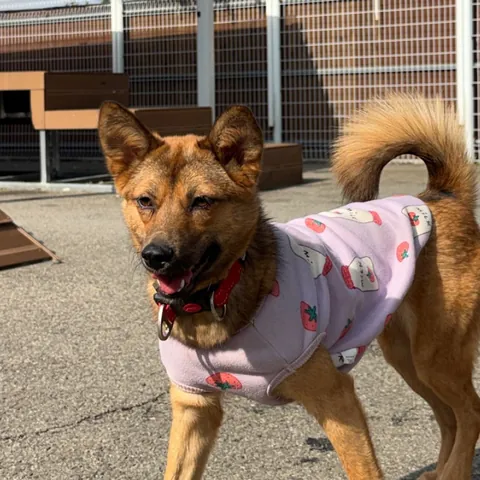
AutumnSmall 8.5kg TenaSmall 4.6kg
TenaSmall 4.6kg MuseSmall 7.3kg
MuseSmall 7.3kg SiriSmall 3.98kg
SiriSmall 3.98kg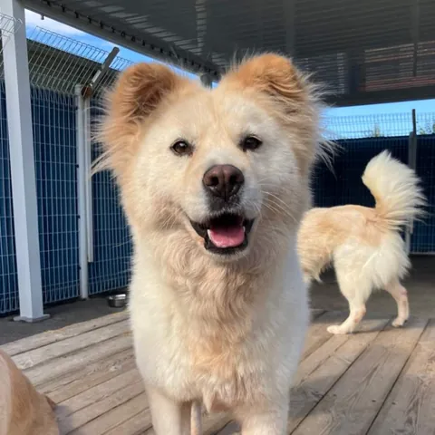
DiteMedium 13.7kg UnoSmall 8.2kg
UnoSmall 8.2kg IttoGrowing puppy 2.62kg
IttoGrowing puppy 2.62kg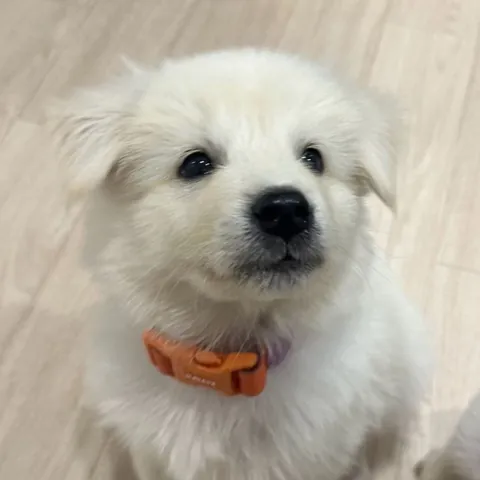
PotaGrowing puppy 2.48kg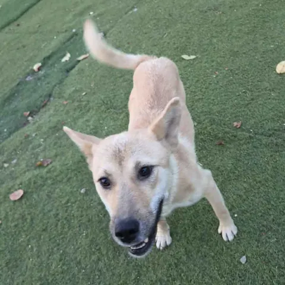
Mos14.5kg Dao12.4kg
Dao12.4kg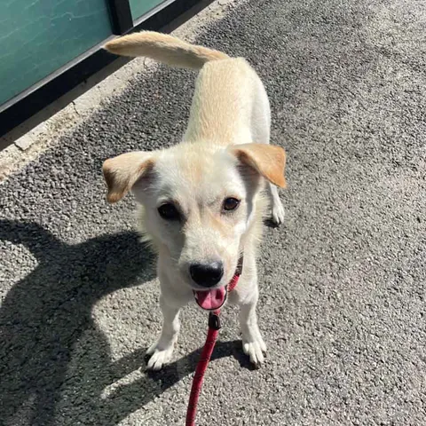
Uni11kg QuinnyMedium 18.2kg
QuinnyMedium 18.2kg PacoMedium 18kg
PacoMedium 18kg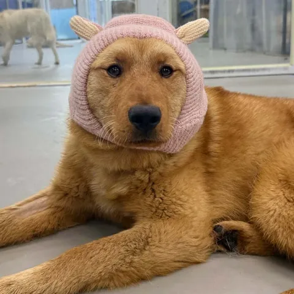
HareuMedium 13.7kg RosalineMedium 16.2kg
RosalineMedium 16.2kg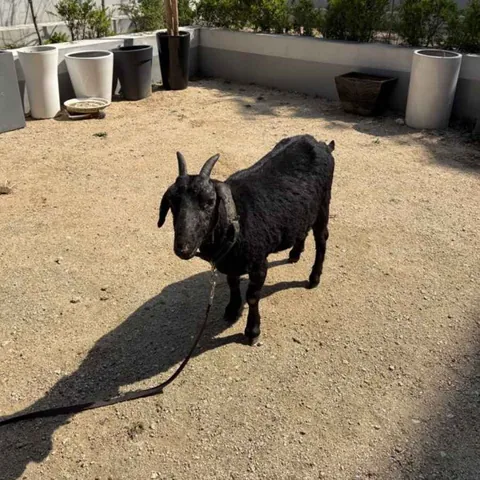
HeukmiFemale G-clefSmall cat 2.4kg
G-clefSmall cat 2.4kg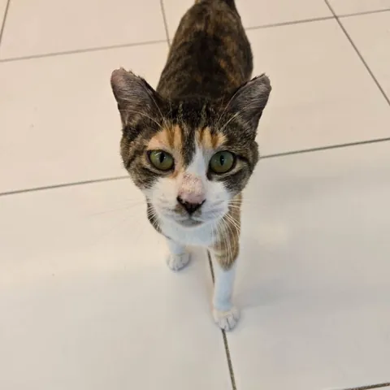
LataSmall cat 2.7kg KMedium 19kg
KMedium 19kg
No one matches these filters.
Some of our dogs have been waiting a long time for a family. We care for them every day, looking forward to the day they go home. Please listen to their stories.
 Long waitDewyMedium 17.8kg
Long waitDewyMedium 17.8kg Long waitGuriSmall 9kg
Long waitGuriSmall 9kg Long waitTeunteunLarge 35kg
Long waitTeunteunLarge 35kg Long waitBertMedium 14.5kg
Long waitBertMedium 14.5kg Long waitWoongSmall 9.84kg
Long waitWoongSmall 9.84kg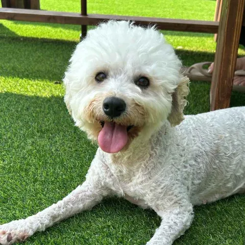
Long waitVitaSmall 7.3kg
No one matches these filters.
Thanks to the people who opened their hearts, these animals found a real family for life. WeAct cheers them on in their second chapter of life.
 YushinGrowing puppy 8.4kg
YushinGrowing puppy 8.4kg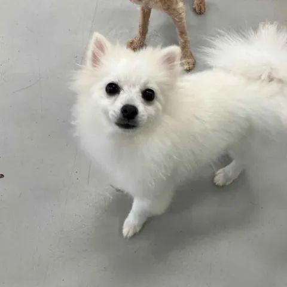
HachiGrowing puppy 3.3kg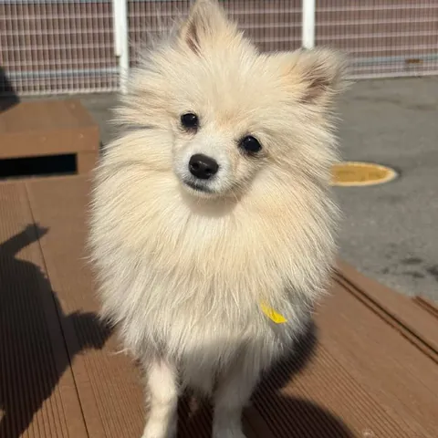
ZiggyGrowing puppy 2.1kg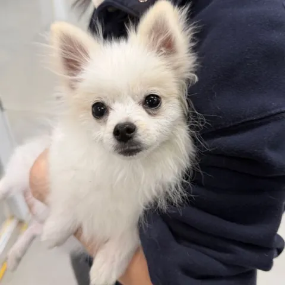
SallangGrowing puppy 1.9kg HesMedium 10.5kg
HesMedium 10.5kg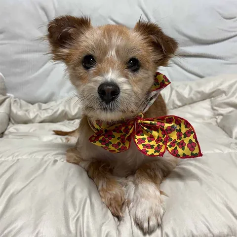
Sun-duckSmall 4.2kg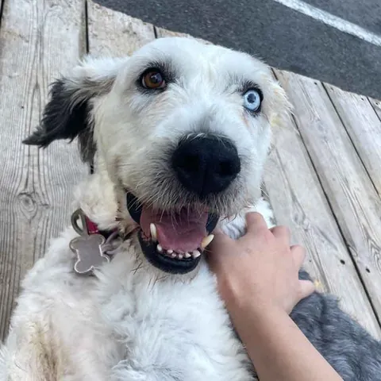
MarineLarge 29kg TicoGrowing puppy 4kg
TicoGrowing puppy 4kg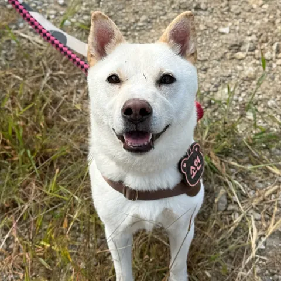
SoyeonMedium 12.9kg PpoPpoSmall 7.8kg
PpoPpoSmall 7.8kg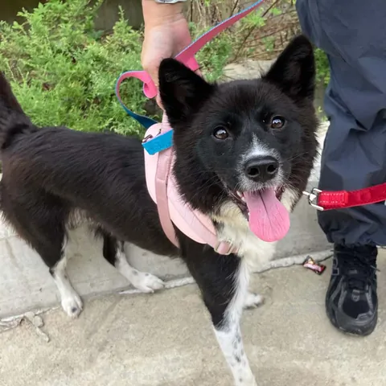
GummyMedium 10.5kg MoominMedium 17.5kg
MoominMedium 17.5kg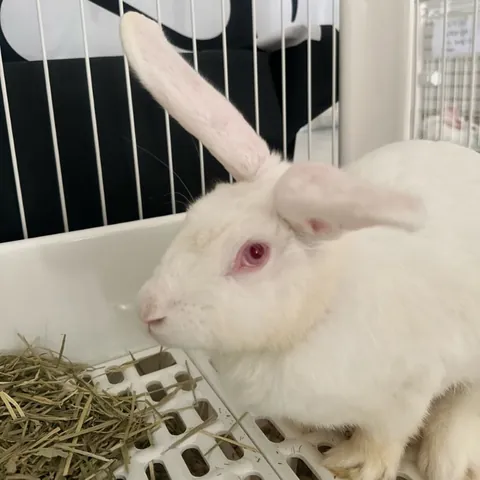
DofuRabbit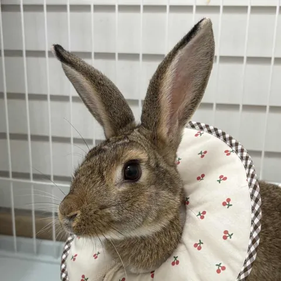
AcornRabbit PinoGrowing puppy 2.8kg
PinoGrowing puppy 2.8kg Kephi8.6kg
Kephi8.6kg OsoriGrowing puppy 3.7kg
OsoriGrowing puppy 3.7kg BobaGrowing puppy 1kg
BobaGrowing puppy 1kg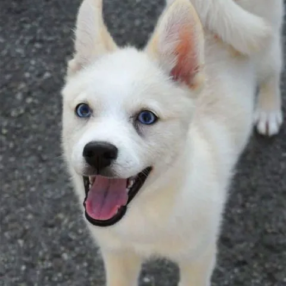
WishGrowing puppy 3kg MagoGrowing puppy 1.4kg
MagoGrowing puppy 1.4kg PoljjakGrowing puppy 2.4kg
PoljjakGrowing puppy 2.4kg EffieGrowing puppy 2.1kg
EffieGrowing puppy 2.1kg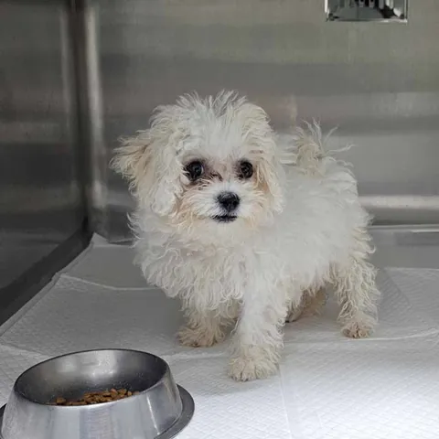
RhythmGrowing puppy 1kg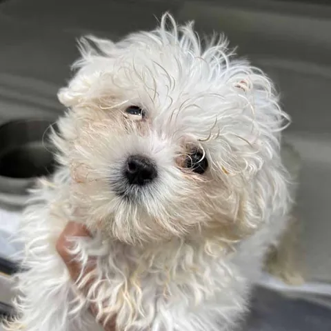
LilouGrowing puppy 720g PookieGrowing puppy 1.6kg
PookieGrowing puppy 1.6kg- ArloGrowing puppy 1.35kg
 GooseGrowing puppy 3.82kg
GooseGrowing puppy 3.82kg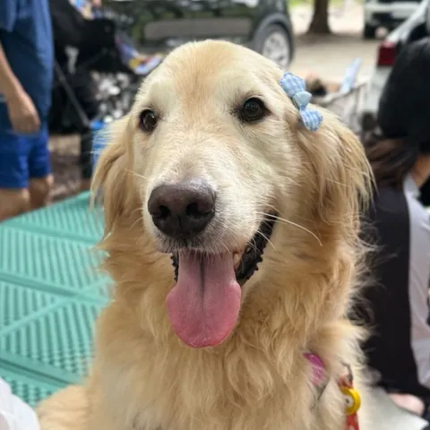
HeroLarge 29.3kg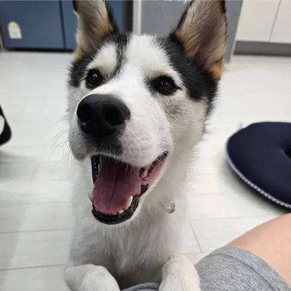
LycheeMedium 15.7kg BbicoGrowing puppy 6kg
BbicoGrowing puppy 6kg EnchoGrowing puppy 1.14kg
EnchoGrowing puppy 1.14kg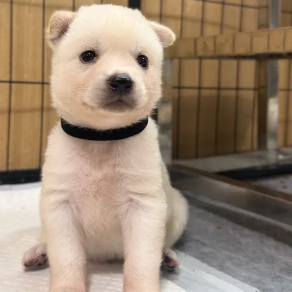
Vonvon 007Growing puppy 1.31kg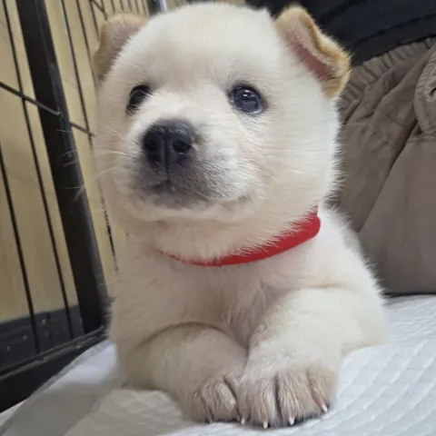
Ddoa007Growing puppy 1.13kg OreumSmall 3.9kg
OreumSmall 3.9kg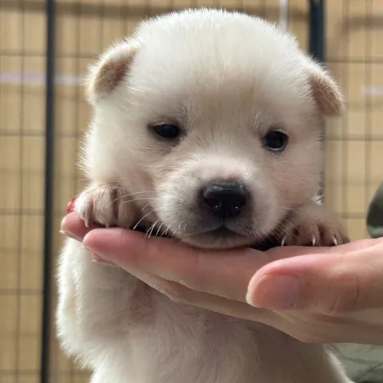
Whacu005Growing puppy 975g Ha-shoo001Small 5.6kg
Ha-shoo001Small 5.6kg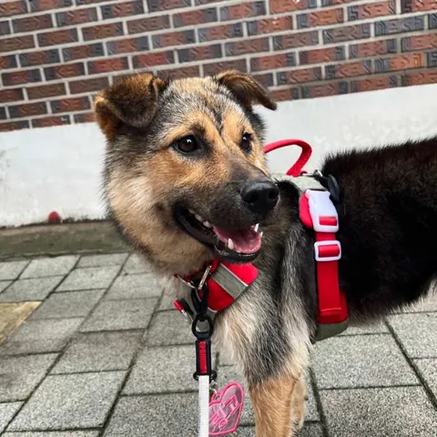
LingoMedium 11.9kg WooyuSmall 2.4kg
WooyuSmall 2.4kg CometMedium 12kg
CometMedium 12kg RoroSmall 4.8kg
RoroSmall 4.8kg U-ChaeSmall 3.8kg
U-ChaeSmall 3.8kg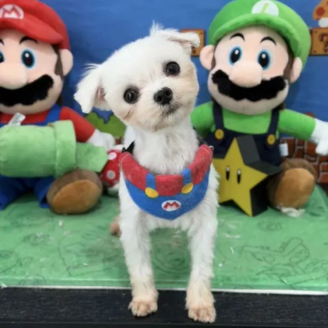
BadaSmall 1.6kg HitoSmall 7.8kg
HitoSmall 7.8kg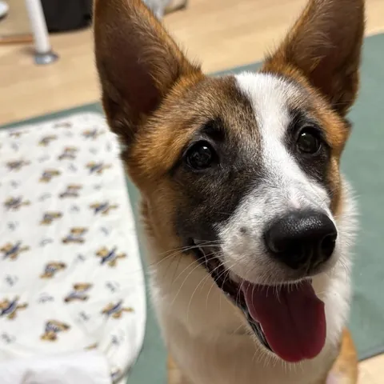
TaiMedium 11.4kg ChalddoekMedium 17kg
ChalddoekMedium 17kg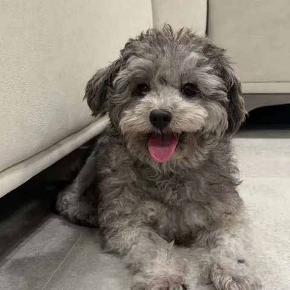
Da-bokSmall 2.6kg PieMedium 12.1kg
PieMedium 12.1kg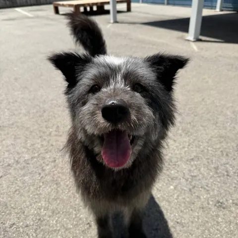
MooPingMedium 14.5kg SuanMedium 18kg
SuanMedium 18kg JenjenSmall 8.7kg
JenjenSmall 8.7kg TaeiSmall 6.7kg
TaeiSmall 6.7kg DukHyeGrowing puppy 8.4kg
DukHyeGrowing puppy 8.4kg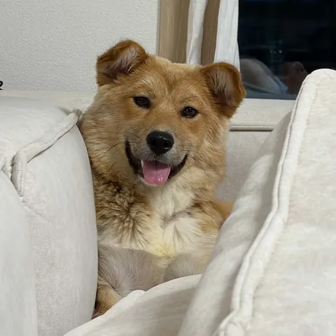
WayMedium 10.4kg Mong-silSmall 1.7kg
Mong-silSmall 1.7kg Haep-ssalSmall 1.7kg
Haep-ssalSmall 1.7kg SioSmall 2.3kg
SioSmall 2.3kg Seol-giGrowing puppy 3.2kg
Seol-giGrowing puppy 3.2kg BamtolGrowing puppy 2.6kg
BamtolGrowing puppy 2.6kg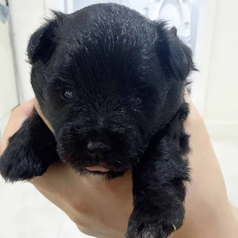
ObokGrowing puppy 175g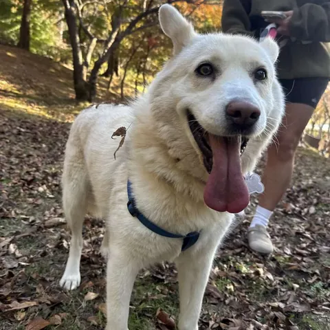
MatthewLarge 22.8kg YewonSmall 11.5kg
YewonSmall 11.5kg PuchiMedium 14.8kg
PuchiMedium 14.8kg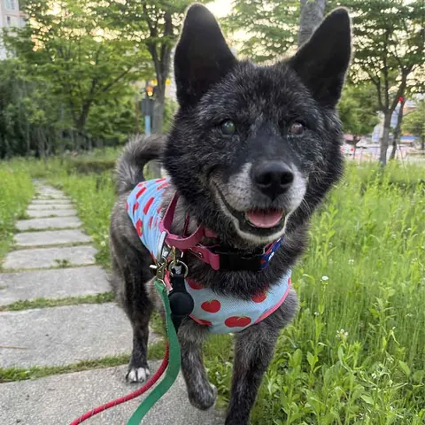
DaphneMedium 17.4kg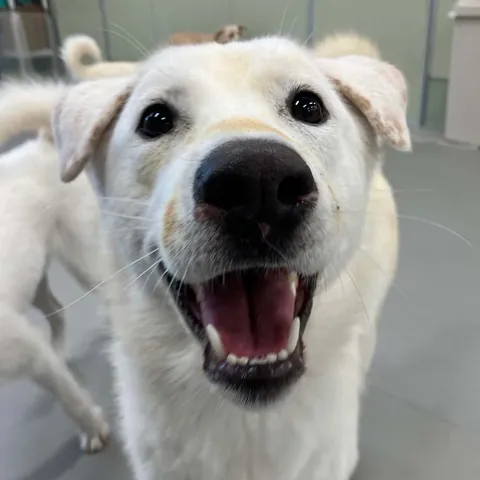
SandeulMedium 18.2kg RomeoLarge 23.9kg
RomeoLarge 23.9kg AlbamSmall 10.2kg
AlbamSmall 10.2kg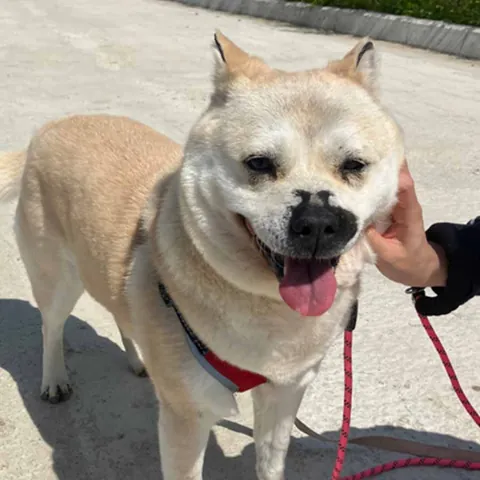
TillyMedium 19.1kg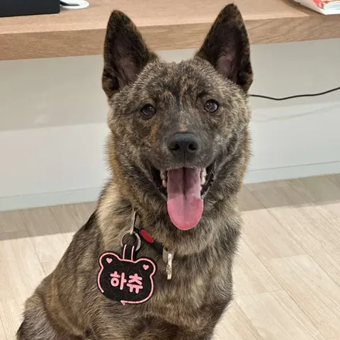
HachuMedium 12.3kg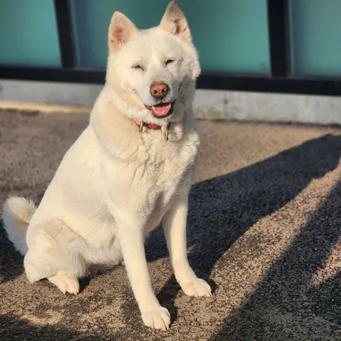
ChloeLarge 22.3kg BoboMedium 16.3kg
BoboMedium 16.3kg HuniMedium 14.2kg
HuniMedium 14.2kg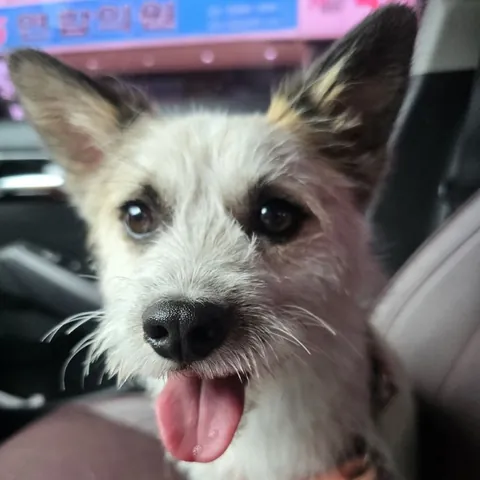
ShadowSmall 7.2kg VixMedium 16.2kg
VixMedium 16.2kg HaemilSmall 7kg
HaemilSmall 7kg SolsolMedium 14.3kg
SolsolMedium 14.3kg KongeeGrowing puppy 10kg
KongeeGrowing puppy 10kg MajuGrowing puppy 10.1kg
MajuGrowing puppy 10.1kg ChanceMedium 11.9kg
ChanceMedium 11.9kg WindySmall 7.6kg
WindySmall 7.6kg DaruMedium 10.86kg
DaruMedium 10.86kg JiguSmall 6.56kg
JiguSmall 6.56kg MaySmall 7.3kg
MaySmall 7.3kg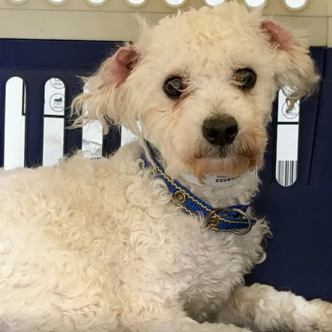
MonteSmall 4.3kg JjangguSmall
JjangguSmall TaenggeulSmall 2.3kg
TaenggeulSmall 2.3kg DamiSmall 4.16kg
DamiSmall 4.16kg PureumMedium 14.1kg
PureumMedium 14.1kg RishaSmall 9.4kg
RishaSmall 9.4kg GureumSmall 2.4kg
GureumSmall 2.4kg HaerangSmall 2.4kg
HaerangSmall 2.4kg- DalgonaSmall 10.3kg
 WolaRabbit
WolaRabbit PhatGrowing puppy 5.2kg
PhatGrowing puppy 5.2kg DanchuMedium 11.3kg
DanchuMedium 11.3kg RugaSmall 6.55kg
RugaSmall 6.55kg- ChukbokMedium 18kg
 LottoMedium 16kg
LottoMedium 16kg PunchySmall 6.24kg
PunchySmall 6.24kg OpporMedium 12.9kg
OpporMedium 12.9kg- RindaLarge 24.4kg
No one matches these filters.
How to adopt
4 steps- 01
Application
Send an adoption application with the name of the dog you have in mind.
Application (US/Canada) · Application (Korea) - 02
Review
If your application is accepted, we will contact you within a week. We do not contact applicants who are not selected.
- 03
Interview and meeting
We review your home and hold an in-depth interview. If you would like to meet the dog, we arrange a time after a first conversation.
Ask on KakaoTalk - 04
After adoption
We keep checking in to make sure the dog is settling in well with the new family.
AdoptionI would like to visit a dog I want to adopt. What should I do?
If you would like to meet a WeAct rescue dog in person, a pre-adoption meeting is held after a consultation and scheduling.
WeAct's adoption team members are all volunteers who work other jobs alongside this and receive no activity fees, and they are not on standby at the places where the rescue dogs are kept. For this reason, we ask for your understanding that visiting or meeting the dogs without scheduling in advance is not possible.
If you would like a pre-adoption meeting, please leave an inquiry through the link below, and we will check it and get back to you individually.
KakaoTalk channel
AdoptionWhat is WeAct's adoption process?
WeAct's adoption process goes as shown in the image below.
Please note that we do not contact applicants whose first-round application is rejected. If your application passes, we contact you by KakaoTalk within one week at most.
AdoptionI don't know much about pets. How should I prepare for adoption?
It's okay if you don't know much about pets. Adoption is less about being perfectly prepared than about taking responsibility as a guardian, learning what you lack, and filling in each other's gaps. Still, because these are rescued animals, some basic understanding and preparation before adoption are necessary. During the adoption process, WeAct explains the daily life and responsibilities of living with a pet through consultations and interviews, and we check together your circumstances and how prepared you are.
What matters is the consent of every family member and an environment and mindset that let you take responsibility to the end. Even if you lack experience, if you are willing to learn, you can prepare for adoption step by step with WeAct.
You can request an adoption consultation through the link below.
KakaoTalk channel
AdoptionI submitted an adoption application but haven't heard back. Can't I find out the result?
If an adoption application is rejected after submission, we do not contact applicants individually. If it is rejected after the first video interview, we notify you individually.
If your application passes, we contact you by KakaoTalk within one week at most.
AdoptionWhy is WeAct's adoption process different?
The road to adoption may seem long and hard, but WeAct's thorough adoption process is the minimum safeguard for rescue dogs. The rescued dogs have gone through more hardship and pain than we can imagine. Dogs who have lived hard lives find great comfort and happiness with a family. Please think of this as the first step of the warm heart and helping hand that considers adopting a rescue dog, and give your whole heart to every part of the process for the dog you hope to adopt.